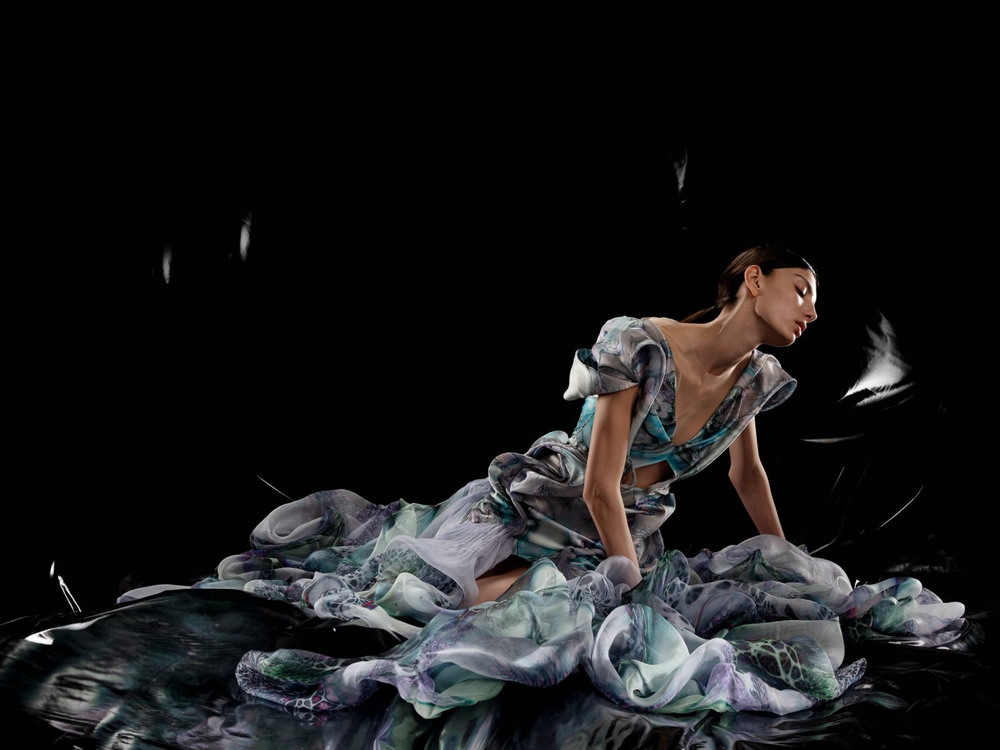
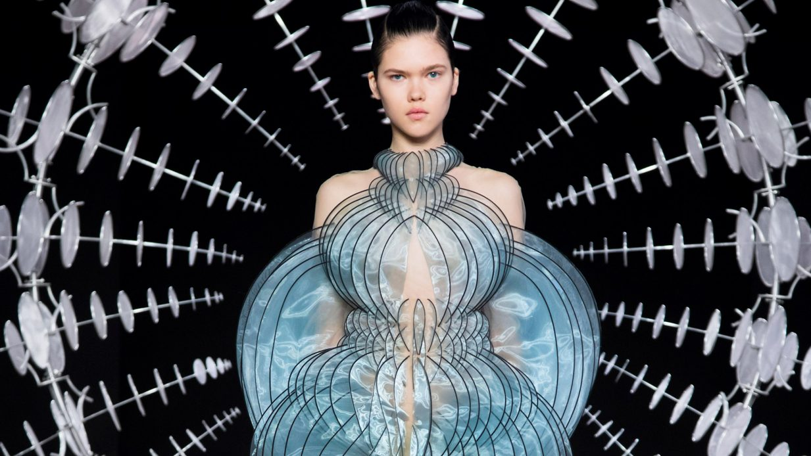
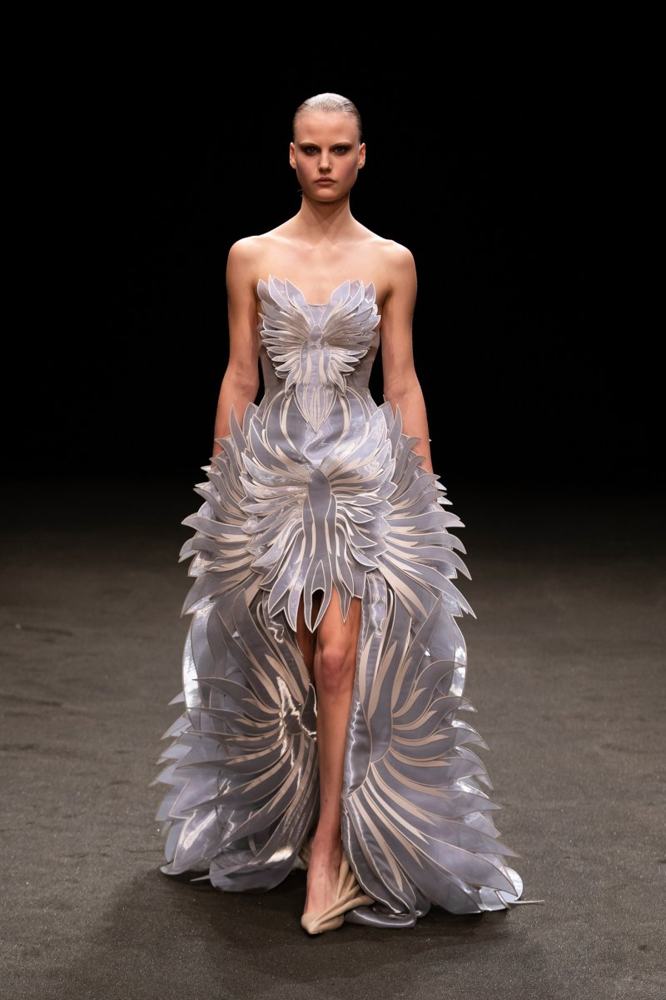
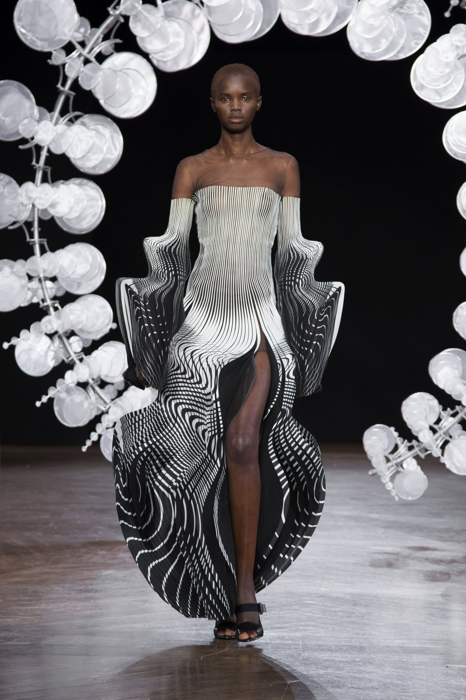
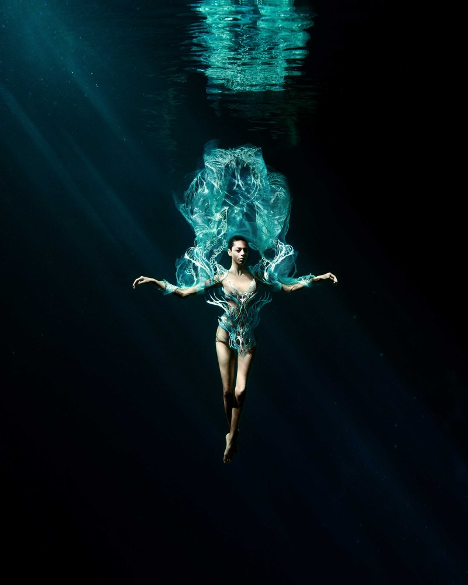
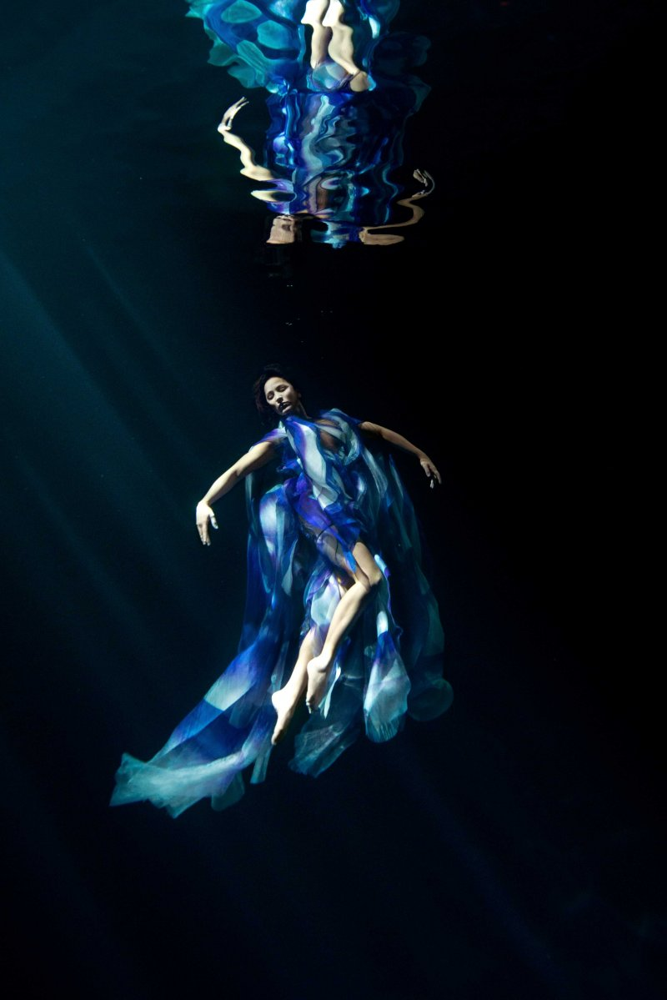
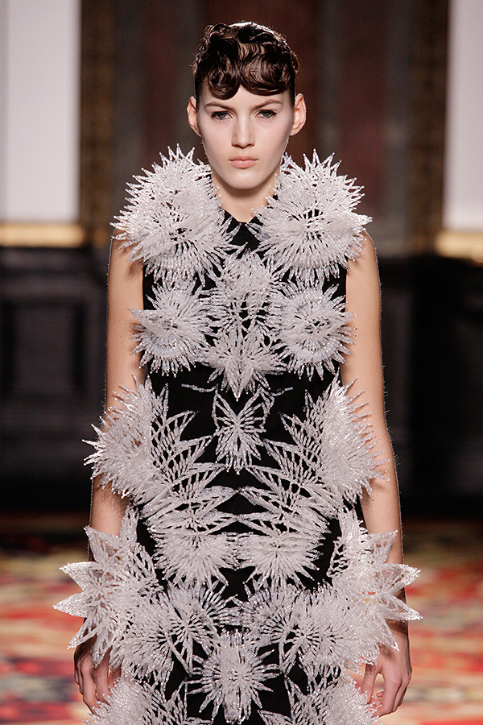
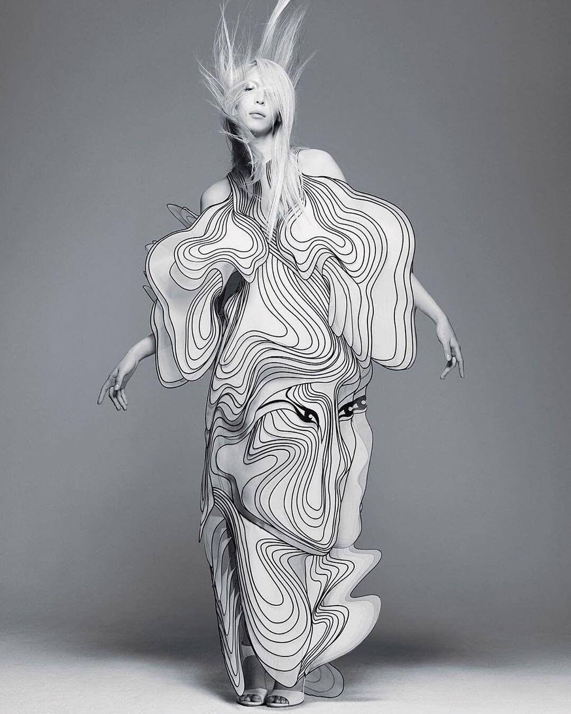

AW19/20 "HYPNOSIS" 巴黎高定周
与动态雕塑家 Anthony Howe 合作：风动雕塑 "Omniverse" 是秀场核心装置——一条会呼吸的金属宇宙。
你沉入深海。
光从头顶的裂缝漏下来，
一丝一丝，像被水拆散的琴弦。
没有声音，只有缓慢。
你抬起头，看见一件裙子在水中张开——
不是布料，是活物。
它的触手跟着水流思考，
它的骨骼是激光刻出来的珊瑚。
她2007年在阿姆斯特丹创立品牌，把高级定制带进实验室：3D打印、激光切割、磁性材质、声波成像。但她的信条恰恰相反——科技不是目的，是让"手"复活的方式。她把手工刺绣和算法并排放在工作台上，说布料应该像水一样思考。她的秀是"活的雕塑"：模特曾被悬吊在半空飞行，裙子曾在水下展开，风动雕塑在 T 台尽头缓慢旋转，像一台呼吸的宇宙。

而这一切的灵魂，藏在一个声音里。Björk。冰岛的音乐精灵，Iris 最重要的缪斯与共谋者。她们一起完成了《Biophilia》时代的全部想象——Björk 穿着她的3D打印裙站在世界的封面上，把她从"时装设计师"变成"未来物种的造物主"。后来 Lady Gaga、Cate Blanchett 都穿她的裙子，但第一个相信这种裙子应该存在的人，是 Björk。
如果你想亲眼看看，去搜 Iris van Herpen SS23 "Carte Blanche" 的水下大片，以及 AW19 "Hypnosis" 大秀——Anthony Howe 的风动雕塑 "Omniverse" 在黑暗中缓缓旋转，裙子是它的倒影。当你看到那些透明骨骼在光里张开，可能就会明白——
未来的衣服不是被设计的，是被孕育的。






